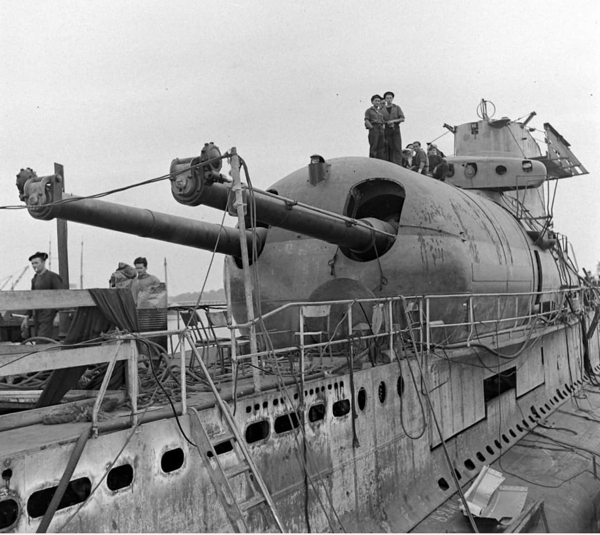

Présentation générale
En 1939, la Marine nationale aligne 77 sous-marins répartis en trois catégories : les océaniques (1 500 tonnes), les 600 tonnes et le Surcouf, croiseur sous-marin unique au monde.
Ces unités assurent la surveillance des côtes, l’escorte, la reconnaissance et les opérations lointaines. Leur diversité reflète la stratégie navale française de l’entre-deux-guerres.

Océaniques – 1 500 tonnes
Les sous-marins océaniques sont les plus grands de la flotte française. Conçus pour les opérations de longue portée, ils disposent d’une autonomie élevée et d’un armement conséquent.
- Déplacement : 1 572 t (surface) / 2 082 t (plongée)
- Longueur : 92,3 m
- Vitesse : 18,5 nd (surface) / 10 nd (plongée)
- Autonomie : 10 000 km
- Armement : 1 canon de 100 mm, 11 tubes lance-torpilles
- Équipage : 65 hommes
- Classes : Redoutable, Pascal, Roland Morillot
- Rôle : opérations océaniques, patrouilles lointaines


600 tonnes – Ariane / Diane / Achille
Les 600 tonnes constituent la majorité de la flotte. Agiles, rapides, conçus pour les opérations côtières, ils sont déployés en Méditerranée, en Manche et en Atlantique.
- Déplacement : 630 t (surface) / 760 t (plongée)
- Longueur : 52,4 m
- Vitesse : 14 nd (surface) / 8,5 nd (plongée)
- Autonomie : 4 000 km
- Armement : 1 canon de 75 mm, 7 tubes lance-torpilles
- Équipage : 43 hommes
- Classes : Ariane, Diane, Circé, Ondine
- Rôle : défense côtière, patrouilles rapides


Surcouf – Croiseur sous-marin
Le Surcouf est un navire unique au monde : croiseur sous-marin armé de deux canons de 203 mm, doté d’un hangar pour hydravion MB.411 et d’une autonomie exceptionnelle.
- Déplacement : 3 250 t (surface) / 4 304 t (plongée)
- Longueur : 110 m
- Vitesse : 18 nd (surface) / 10 nd (plongée)
- Armement : 2 canons de 203 mm, 14 tubes lance-torpilles
- Hydravion : MB.411 embarqué
- Équipage : 118 hommes
- Rôle : reconnaissance, artillerie lourde, opérations océaniques
- Statut : classe unique

Intérieur d’un sous-marin
Le poste central regroupe périscope, commandes de plongée, manomètres et communications internes. C’est le cœur opérationnel du sous-marin.

Page du Musée HOP WW2 – Section sous-marins français